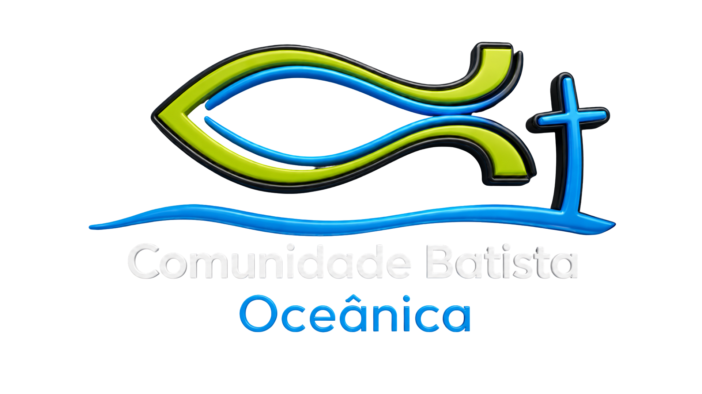

Comunidade Batista Oceânica
Portal de Líderes CBO
Um espaço para facilitar a organização, a comunicação e o serviço dos nossos ministérios.
Acessos rápidos
Solicitar eventoReserve espaços e informe os detalhes do evento.
Solicitar arteEnvie pedidos de peças e materiais de comunicação.
EscalaConsulte e organize as escalas dos ministérios.
Material didáticoEm breve, materiais de apoio para os ministérios.Em breve
Agenda CBO
Eventos da igreja
Consulte os próximos compromissos e navegue pelas datas no calendário.